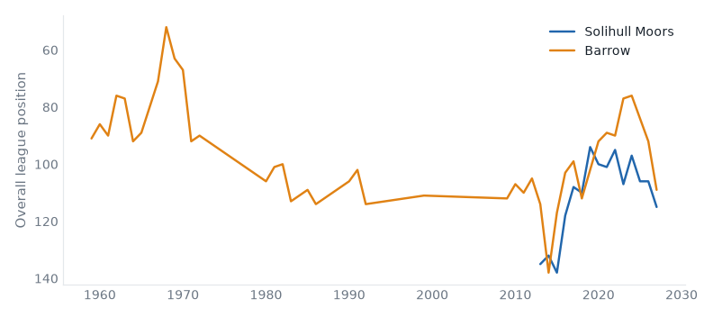
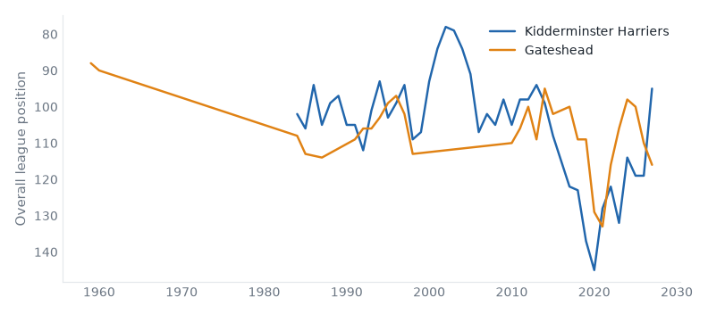

League One, League Two and the National League, 15 September to 21 September 2026. 48 results.
Solihull 1–0 Barrow
National League, Tue 15 Sep
Solihull Moors have 4 points from 8 games, their worst start in their record.

Kidderminster 1–0 Gateshead
National League, Wed 16 Sep
Gateshead have 4 points from 8 games, their worst start in their record. Kidderminster Harriers have 17 points from 8 games, their best start since 2016/17.

Scunthorpe 1–2 Boreham Wood
National League, Wed 16 Sep
Boreham Wood have 20 points from 8 games, their best start in their record.
Yeovil 4–1 Solihull
National League, Fri 18 Sep
Solihull Moors have 4 points from 9 games, their worst start in their record.
Boreham Wood 4–1 Harrogate
National League, Sat 19 Sep
Boreham Wood have 23 points from 9 games, their best start in their record.
Gateshead 1–6 Southend
National League, Sat 19 Sep
Gateshead have 4 points from 9 games, their worst start in their record. Southend United have 20 points from 9 games, their best start since 1990/91.
Aldershot 1–1 Yeovil
National League, Tue 15 Sep
Aldershot Town have 15 points from 8 games, their best start since 2016/17.
Harrogate 1–2 Fylde
National League, Tue 15 Sep
AFC Fylde have 17 points from 8 games, their best start since 2016/17.
Southend 3–1 Tamworth
National League, Tue 15 Sep
Tamworth have 5 points from 8 games, their worst start since 2003/04.
Worthing 1–0 Hornchurch
National League, Tue 15 Sep
Hornchurch have 3 games without scoring in a row, their longest run since 2014/15.
Luton 0–1 Bradford
League One, Sat 19 Sep
Bradford City have 15 points from 7 games, their best start since 2008/09.
Reading 2–0 Notts County
League One, Sat 19 Sep
Reading beat Notts County for the first time since 2001/02.
Sheffield Weds 0–0 Stockport
League One, Sat 19 Sep
Sheffield Wednesday have 14 points from 7 games, their best start since 2003/04.
Wigan 0–1 Wycombe
League One, Sat 19 Sep
Wigan Athletic have 4 points from 7 games, their worst start since 2016/17.
Crewe 1–1 Shrewsbury
League Two, Sat 19 Sep
Crewe Alexandra have 5 draws in a row, their longest run since 2010/11.
Exeter 0–0 Tranmere
League Two, Sat 19 Sep
Exeter City have 6 points from 7 games, their worst start since 2016/17.
Gillingham 3–0 Bristol Rvs
League Two, Sat 19 Sep
Bristol Rovers have 12 points from 7 games, their best start since 2009/10.
Grimsby 2–0 Crawley Town
League Two, Sat 19 Sep
Grimsby Town have 11 games unbeaten in a row, their longest run since 2015/16.
Rochdale 2–0 Oldham
League Two, Sat 19 Sep
Rochdale beat Oldham Athletic for the first time since 2016/17.
Barrow 1–0 Aldershot
National League, Sat 19 Sep
Aldershot Town have 15 points from 9 games, their best start since 2016/17.
Fylde 1–2 Altrincham
National League, Sat 19 Sep
AFC Fylde have 17 points from 9 games, their best start since 2016/17.
Tamworth 2–1 Wealdstone
National League, Sat 19 Sep
Tamworth have 8 points from 9 games, their worst start since 2014/15.
| Thu 17 | AFC Wimbledon | 0–0 | Milton Keynes Dons | worst start since 2020/21 | |
| Sat 19 | Barnsley | 1–1 | Leicester | worst start since 2021/22 | |
| Sat 19 | Blackpool | 2–4 | Plymouth | ||
| Sat 19 | Bromley | 2–1 | Huddersfield | ||
| Sat 19 | Burton | 2–2 | Mansfield | best start since 2021/22 | |
| Sat 19 | Leyton Orient | 1–0 | Stevenage | ||
| Sat 19 | Luton | 0–1 | Bradford | best start since 2008/09 | |
| Sat 19 | Oxford | 1–1 | Cambridge | ||
| Sat 19 | Peterboro | 0–2 | Doncaster | ||
| Sat 19 | Reading | 2–0 | Notts County | first win v Notts County since 2001/02 | |
| Sat 19 | Sheffield Weds | 0–0 | Stockport | best start since 2003/04 | |
| Sat 19 | Wigan | 0–1 | Wycombe | worst start since 2016/17 |
| P | W | D | L | GD | Pts | ||
|---|---|---|---|---|---|---|---|
| 1 | Reading | 4 | 3 | 0 | 1 | +8 | 9 |
| 2 | AFC Wimbledon | 4 | 2 | 2 | 0 | +2 | 8 |
| 3 | Huddersfield Town | 3 | 2 | 1 | 0 | +5 | 7 |
| 4 | Mansfield Town | 3 | 2 | 1 | 0 | +4 | 7 |
| 5 | Burton Albion | 4 | 1 | 3 | 0 | +3 | 6 |
| 6 | Plymouth Argyle | 3 | 2 | 0 | 1 | +3 | 6 |
| 7 | Bradford City | 3 | 2 | 0 | 1 | +2 | 6 |
| 8 | Cambridge United | 3 | 2 | 0 | 1 | +1 | 6 |
| 9 | Sheffield Wednesday | 4 | 1 | 2 | 1 | +4 | 5 |
| 10 | Oxford United | 3 | 1 | 2 | 0 | +3 | 5 |
| 11 | Blackpool | 4 | 1 | 2 | 1 | +2 | 5 |
| 12 | Luton Town | 4 | 1 | 2 | 1 | +1 | 5 |
| 13 | Notts County | 3 | 1 | 1 | 1 | 0 | 4 |
| 14 | Stevenage | 3 | 1 | 1 | 1 | 0 | 4 |
| 15 | Peterborough United | 4 | 1 | 1 | 2 | -2 | 4 |
| 16 | Barnsley | 4 | 1 | 1 | 2 | -4 | 4 |
| 17 | Bromley | 4 | 1 | 1 | 2 | -6 | 4 |
| 18 | Stockport County | 3 | 1 | 0 | 2 | +2 | 3 |
| 19 | MK Dons | 3 | 0 | 3 | 0 | 0 | 3 |
| 20 | Leicester City | 3 | 1 | 0 | 2 | -3 | 3 |
| 21 | Leyton Orient | 4 | 1 | 0 | 3 | -3 | 3 |
| 22 | Wigan Athletic | 4 | 1 | 0 | 3 | -5 | 3 |
| 23 | Doncaster Rovers | 3 | 0 | 2 | 1 | -1 | 2 |
| 24 | Wycombe Wanderers | 3 | 0 | 2 | 1 | -1 | 2 |
| Sat 19 | Accrington | 0–0 | Newport County | ||
| Sat 19 | Barnet | 3–1 | Fleetwood Town | ||
| Sat 19 | Chesterfield | 2–0 | York | ||
| Sat 19 | Colchester | 1–1 | Cheltenham | best start since 2020/21 | |
| Sat 19 | Crewe | 1–1 | Shrewsbury | 5 draws, longest since 2010/11 | |
| Sat 19 | Exeter | 0–0 | Tranmere | worst start since 2016/17 | |
| Sat 19 | Gillingham | 3–0 | Bristol Rvs | best start since 2009/10 | |
| Sat 19 | Grimsby | 2–0 | Crawley Town | 11 games unbeaten, longest since 2015/16 | |
| Sat 19 | Northampton | 0–1 | Rotherham | worst start since 2018/19 | |
| Sat 19 | Rochdale | 2–0 | Oldham | first win v Oldham Athletic since 2016/17 | |
| Sat 19 | Salford | 1–0 | Swindon | ||
| Sat 19 | Walsall | 2–0 | Port Vale |
| P | W | D | L | GD | Pts | ||
|---|---|---|---|---|---|---|---|
| 1 | Barnet | 4 | 3 | 1 | 0 | +5 | 10 |
| 2 | Grimsby Town | 4 | 3 | 1 | 0 | +5 | 10 |
| 3 | York City | 3 | 3 | 0 | 0 | +6 | 9 |
| 4 | Bristol Rovers | 3 | 3 | 0 | 0 | +5 | 9 |
| 5 | Swindon Town | 3 | 3 | 0 | 0 | +5 | 9 |
| 6 | Salford City | 4 | 3 | 0 | 1 | +2 | 9 |
| 7 | Walsall | 4 | 2 | 2 | 0 | +3 | 8 |
| 8 | Colchester United | 4 | 2 | 2 | 0 | +2 | 8 |
| 9 | Tranmere Rovers | 3 | 2 | 1 | 0 | +4 | 7 |
| 10 | Cheltenham Town | 3 | 2 | 1 | 0 | +2 | 7 |
| 11 | Gillingham | 4 | 2 | 1 | 1 | +2 | 7 |
| 12 | Oldham Athletic | 3 | 2 | 0 | 1 | +4 | 6 |
| 13 | Exeter City | 4 | 1 | 3 | 0 | +2 | 6 |
| 14 | Accrington Stanley | 4 | 1 | 3 | 0 | +1 | 6 |
| 15 | Crewe Alexandra | 4 | 1 | 3 | 0 | +1 | 6 |
| 16 | Rochdale | 4 | 2 | 0 | 2 | +1 | 6 |
| 17 | Shrewsbury Town | 3 | 2 | 0 | 1 | +1 | 6 |
| 18 | Newport County | 3 | 1 | 2 | 0 | +3 | 5 |
| 19 | Fleetwood Town | 3 | 1 | 2 | 0 | +2 | 5 |
| 20 | Chesterfield | 4 | 1 | 2 | 1 | +1 | 5 |
| 21 | Port Vale | 3 | 1 | 2 | 0 | +1 | 5 |
| 22 | Rotherham United | 3 | 1 | 2 | 0 | +1 | 5 |
| 23 | Northampton Town | 4 | 1 | 2 | 1 | 0 | 5 |
| 24 | Crawley Town | 3 | 0 | 0 | 3 | -5 | 0 |
| Tue 15 | Aldershot | 1–1 | Yeovil | best start since 2016/17 | |
| Tue 15 | Boston Utd | 1–1 | Woking | ||
| Tue 15 | Carlisle | 1–1 | Forest Green | ||
| Tue 15 | Harrogate | 1–2 | Fylde | best start since 2016/17 | |
| Tue 15 | Solihull | 1–0 | Barrow | worst start on record | |
| Tue 15 | Southend | 3–1 | Tamworth | worst start since 2003/04 | |
| Tue 15 | Sutton | 2–1 | Eastleigh | best start since 2020/21 | |
| Tue 15 | Wealdstone | 0–1 | Halifax | ||
| Tue 15 | Worthing | 1–0 | Hornchurch | 3 games without scoring, longest since 2014/15 | |
| Wed 16 | Altrincham | 2–1 | Hartlepool | ||
| Wed 16 | Kidderminster | 1–0 | Gateshead | worst start on record | |
| Wed 16 | Scunthorpe | 1–2 | Boreham Wood | best start on record | |
| Fri 18 | Yeovil | 4–1 | Solihull | worst start on record | |
| Sat 19 | Barrow | 1–0 | Aldershot | best start since 2016/17 | |
| Sat 19 | Boreham Wood | 4–1 | Harrogate | best start on record | |
| Sat 19 | Eastleigh | 1–0 | Carlisle | ||
| Sat 19 | Forest Green | 1–3 | Boston Utd | best start since 2018/19 | |
| Sat 19 | Fylde | 1–2 | Altrincham | best start since 2016/17 | |
| Sat 19 | Gateshead | 1–6 | Southend | worst start on record | |
| Sat 19 | Halifax | 1–1 | Sutton | best start since 2020/21 | |
| Sat 19 | Hartlepool | 1–3 | Worthing | best start since 2018/19 | |
| Sat 19 | Hornchurch | 1–0 | Scunthorpe | best start since 2018/19 | |
| Sat 19 | Tamworth | 2–1 | Wealdstone | worst start since 2014/15 | |
| Sat 19 | Woking | 0–0 | Kidderminster | 8 games unbeaten, longest since 2018/19 |
| P | W | D | L | GD | Pts | ||
|---|---|---|---|---|---|---|---|
| 1 | Kidderminster Harriers | 5 | 3 | 2 | 0 | +4 | 11 |
| 2 | Eastleigh | 5 | 3 | 2 | 0 | +3 | 11 |
| 3 | Boreham Wood | 4 | 3 | 1 | 0 | +5 | 10 |
| 4 | FC Halifax Town | 5 | 3 | 1 | 1 | +5 | 10 |
| 5 | Harrogate Town | 5 | 3 | 1 | 1 | +5 | 10 |
| 6 | Yeovil Town | 5 | 3 | 1 | 1 | +4 | 10 |
| 7 | Hornchurch | 4 | 3 | 0 | 1 | +4 | 9 |
| 8 | Southend United | 4 | 3 | 0 | 1 | +2 | 9 |
| 9 | Altrincham | 4 | 3 | 0 | 1 | +1 | 9 |
| 10 | Sutton United | 5 | 3 | 0 | 2 | -1 | 9 |
| 11 | Carlisle United | 5 | 2 | 2 | 1 | +4 | 8 |
| 12 | Woking | 5 | 2 | 2 | 1 | +2 | 8 |
| 13 | Aldershot Town | 4 | 2 | 1 | 1 | +2 | 7 |
| 14 | Tamworth | 4 | 2 | 1 | 1 | +1 | 7 |
| 15 | Worthing | 5 | 2 | 1 | 2 | 0 | 7 |
| 16 | Barrow | 4 | 2 | 0 | 2 | +2 | 6 |
| 17 | Hartlepool United | 4 | 2 | 0 | 2 | 0 | 6 |
| 18 | Forest Green Rovers | 5 | 2 | 0 | 3 | -1 | 6 |
| 19 | AFC Fylde | 4 | 1 | 2 | 1 | +1 | 5 |
| 20 | Scunthorpe United | 4 | 1 | 1 | 2 | -1 | 4 |
| 21 | Boston United | 5 | 1 | 1 | 3 | -3 | 4 |
| 22 | Gateshead | 4 | 1 | 1 | 2 | -4 | 4 |
| 23 | Solihull Moors | 5 | 1 | 0 | 4 | -6 | 3 |
| 24 | Wealdstone | 4 | 0 | 1 | 3 | -6 | 1 |
Crewe Alexandra: 5 draws in a row, equalling their record (1967/68).
Bradford City: 3 clean sheets in a row; the record is 5 (2015/16).
MK Dons: 3 draws in a row; the record is 4 (2008/09).
Wigan Athletic: 3 games without scoring in a row; the record is 4 (1982/83).
Worthing: 2 wins in a row; the record is 4 (2016/17).
Built from the English football database, tiers 1–5 from 1958/59. Results from football-data.co.uk. Archived copy.